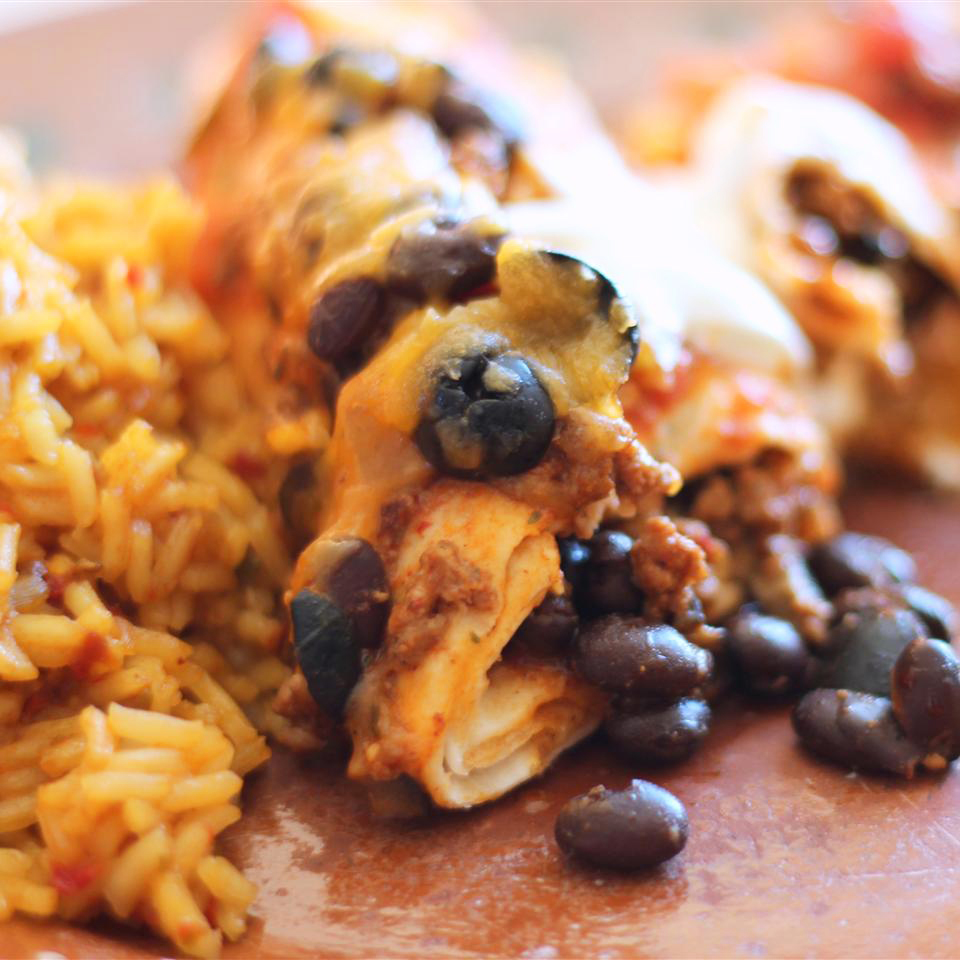

Beef Enchiladas

Description
This recipe will show you how to make a delicious beef enchilada.
Ingredients
- 2 pounds ground beef
- 1/4 medium onion, lightly chopped
- 1 1/4 cups shredded Cheddar cheese, divided
- 1/2 cup sour cream
- 1 tablespoon dried parsley
- 1 tablespoon taco seasoning
- 1 teaspoon dried oregano
- 1/2 teaspoon ground black pepper
- 2 1/2 cups enchilada sauce
- 1 1/2 teaspoons chili powder
- 1 clove garlic, minced
- 1/2 teaspoon salt
- 8 flour tortillas
- 1 (15 ounce) can black beans, rinsed and drained
- 1 (4 ounce) can sliced black olives, drained
Steps
- Preheat oven to 350 degrees F. (175 degrees C)
- Heat a large skillet over medium-high heat. Cook and stir ground beef and onion in the hot skillet until beef is browned and crumbly, 5 to 7 minutes. Drain and discard grease.
- Stir 1 cup Cheddar cheese, sour cream, parsley, taco seasoning, oregano, and black pepper into ground beef until cheese is melted. Mix in enchilada sauce, chili powder, garlic, and salt; bring to a boil, reduce heat to low, and simmer until sauce is slightly thickened, about 5 minutes.
- Lay a tortilla onto a work surface and spoon about 1/4 cup meat sauce down the center of tortilla. Top meat sauce with 1 tablespoon black beans and a sprinkling of black olives. Roll up tortilla, enclosing filling; lay seam-side down in a 9x13-inch baking dish. Repeat with remaining tortillas.
- Spoon any remaining meat sauce over rolled tortillas. Scatter any remaining black beans and black olives over the top. Sprinkle with remaining 1/4 cup Cheddar cheese.
- Bake in the preheated oven until cheese is melted and sauce is bubbling, 20 to 22 minutes. Let stand 5 minutes before serving.